-
Ikki de Fênix
HP 1000
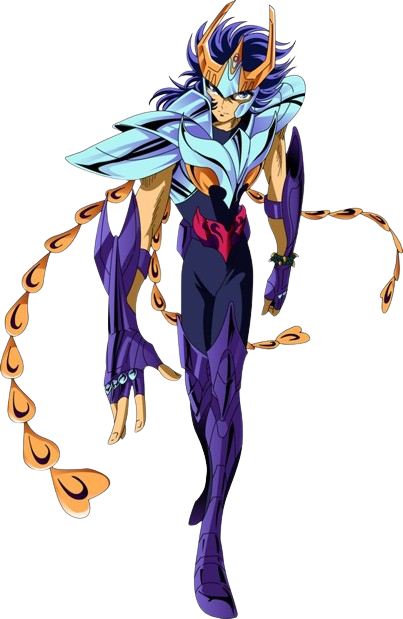Descrição
"O solitário pássaro imortal que abandonou suas lágrimas e sua bondade no inferno!"
Ikki de Fênix é um Cavaleiro de Bronze do século XX e irmão mais velho do também cavaleiro de bronze, Shun de Andrômeda. Na Ilha da Rainha da Morte, onde foi treinado, acaba vendo Esmeralda, seu grande amor, morta por uma falha sua e fica sabendo o terrível segredo de seu nascimento. Tais fatos são suficientes para ele começar a odiar a tudo e a todos. Ikki comandou os Cavaleiros Negros em uma vingança contra Saori Kido, mas se arrependeu e agora luta pela Deusa Atena, ajudando seus amigos e seu irmão sempre que necessário. -
Hyoga de Cisne
HP 900
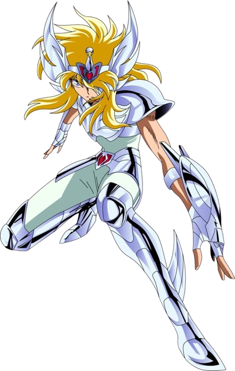Descrição
"Dance, Cisne! Leve o frio do zero absoluto sobre as suas asas."
Hyoga de Cisne é um Cavaleiro de Bronze do século XX. Um dos 100 órfãos reunidos por Mitsumasa Kido para proteger a deusa Atena. Nas frias terras das Geleiras Eternas, no leste da Sibéria, Hyoga torna-se Cavaleiro tendo como mestre Camus, o Cavaleiro de Ouro de Aquário, que manipula o frio. Seguindo os ensinamentos do seu mestre, ele tenta manter-se racional diante de tudo, mas possui um lado emotivo que não consegue abandonar. -
Shiryu de Dragão
HP 900

Descrição
"Pela justiça e pela amizade... Um cavaleiro invencível que supera todos os obstáculos."
Shiryu de Dragão é um Cavaleiro de Bronze do século XX, incumbido com a missão de proteger a deusa Atena. Teve seu treinamento realizado pelo Mestre Ancião nos Cinco Picos Antigos de Rozan, na China. Shiryu herdou de seu mestre não apenas a força, mas também a sabedoria e o senso de justiça que o guia. -
Shun de Andrômeda
HP 900
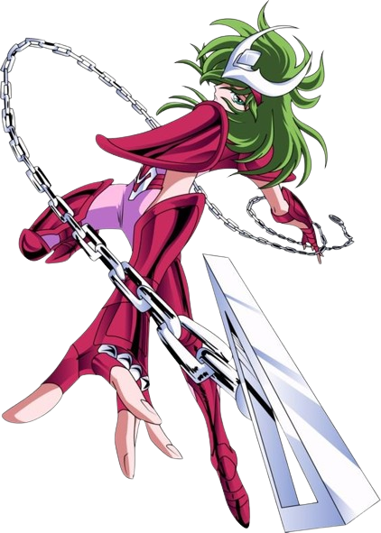Descrição
"Um pacífico cavaleiro de Atena escondendo um poderoso cosmo."
Shun de Andrômeda é um Cavaleiro de Bronze do século XX, incumbido com a missão de proteger a deusa Atena do mal. Ele tem uma personalidade pacífica e odeia lutar, sempre ferido por medo de ferir seus inimigos e sacrificaria sua vida para salvar a dos outros. -
Seya de Pégaso
HP 900
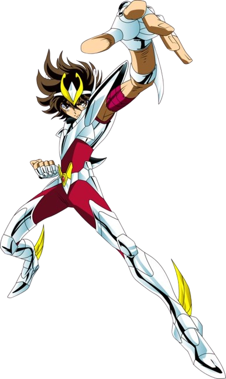Descrição
"Seu cosmo inflamado acende a chama dos milagres do cavaleiro de pégaso!"
O Cavaleiro de Bronze da constelação de Pégaso do século XX, incumbido com a missão de proteger a deusa Atena nas Guerras Santas no século XX. Caracterizado principalmente por nunca desistir de lutar em qualquer situação, por mais impossível ou difícil que possa parecer. -
Afrodite de Peixes
HP 1000
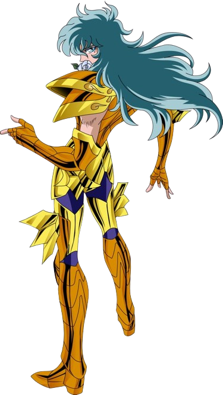Descrição
"As belas rosas são um convite à morte. A última fortaleza que protege o Grande Mestre."
É o Cavaleiro de Ouro de Peixes e protetor da última Casa do Zodíaco do século XX. Usa variações de golpes com rosas, como o Rosas Diabólicas Reais. Sua ideia é de que só um poder supremo pode manter a paz e ordem no mundo, mesmo que esse poder provenha do mal. Por isso, mesmo tendo consciência de que o Grande Mestre servia ao mal, acabou obedecendo suas ordens e matando Daidalos, mestre de Shun. Sua atitude pode não ser a mais exemplar para um Cavaleiro, mas seu propósito de manter a paz na Terra é igual ao de qualquer Cavaleiro. -
Aiolia de Leão
HP 1000

Descrição
"O Herói valente como Leão! Sempre lutando por Atena!"
Irmão mais jovem de Aiolos. Apesar de sua personalidade explosiva, tem um coração puro que distingue rapidamente os justos, por isso foi um dos primeiros Cavaleiros de Ouro a reconhecer a autoridade de Atena. Como seu irmão Aiolos foi condenado como traidor, ele tenta limpar o nome da família jurando fidelidade ao Grande Mestre, até participando voluntariamente do extermínio dos Cavaleiros de Bronze. Durante a batalha contra os Espectros, enfrentou o exército inimigo de frente e derrubou muitos Espectros, servindo como poder central de ataque no Santuário. -
Aioros de Sagitário
HP 1000

Descrição
"O Herói que salvou a recém nascida Atena e mesmo depois de morto protege a terra!"
é o Cavaleiro de Ouro de Sagitário do século XX. Antes de morrer, há 13 anos, entregou Atena ainda bebê e sua Armadura de Ouro aos cuidados de Mitsumasa Kido, que estava viajando pela Grécia. Desde então, Aioros passou a ser considerado um traidor no Santuário, que era comandado por Saga disfarçado de Grande Mestre. Mesmo morto, sua alma continua a controlar sua Armadura de Sagitário, sempre ajudando, nos momentos críticos – emprestou-a a Seiya durante a luta contra Poseidon, por exemplo. -
Aldebaran de Touro
HP 1000
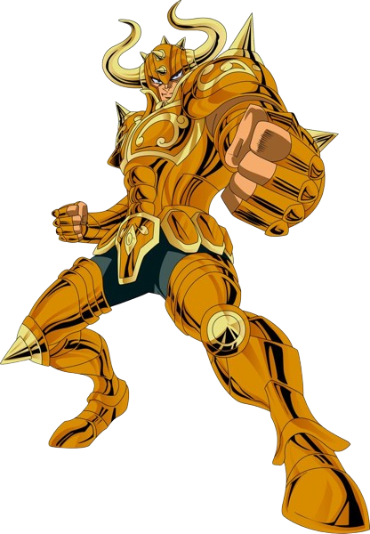Descrição
"O bravo Touro Dourado erguendo um muro de ferro!"
Aldebaran é o Cavaleiro de Ouro de Touro do século XX, que protege a Casa de Touro no Santuário. Dotado de uma resistência fora do comum, nem mesmo o Meteoro de Pégaso de Seiya conseguiu causar danos ao seu corpo. O Grande Chifre, alusão ao chifre de um touro bravo, é um golpe lançado quando está engatado com o inimigo. Mas se desferido depois, de longe, sua potência dobra. De personalidade franca e despachada, confia no que sente, sem se preocupar com as aparências ou racionalidades. Lutou com Niobe de Deep quando os Espectros invadiram o Santuário, tendo um fim heroico. -
Camus de Aquário
HP 1000

Descrição
"Alma quente escondida atrás do frio eterno!"
É o Cavaleiro de Ouro que protege a Casa de Aquário no Santuário. No mangá, treinou o pequeno Hyoga e Isaak durante seis anos nas geladas terras do leste da Sibéria. foi obrigado a lutar contra Hyoga no Santuário. Camus é um cavaleiro bastante poderoso, com habilidade de baixar a temperatura e lançar o Pó de Diamante com grande facilidade. A Execução Aurora é o seu golpe secreto mais poderoso, que emite um frio próximo ao zero absoluto, e foi herdado por Hyoga. -
Dohko de Libra
HP 1000
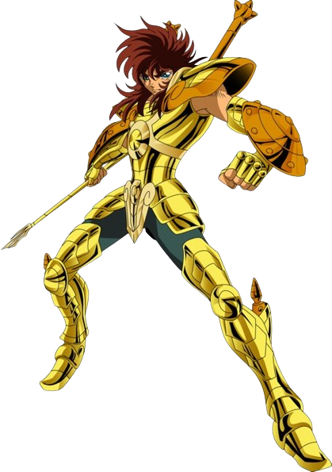Descrição
"O Lendário Cavaleiro sobre os cinco Picos de Rozan!"
É um lendário e renomado Cavaleiro de Ouro do Santuário de Atena por ter lutado e sobrevivido a Guerra Santa contra Hades no Século XVIII ao lado de seu parceiro de batalhas, Shion de Áries. Após o fim do conflito e ser incumbido por Atena de vigiar o selo que aprisionava o espectros do Imperador dos Mortos, Dohko ficou recluso nos Cinco Picos Antigos de Rozan até o Século XX, período que passara a ser venerado como Mestre Ancião e ao mesmo tempo que mantinha sua vigília, treinou Shiryu, que se tornaria o Cavaleiro de Bronze de Dragão. -
Death Mask de Câncer
HP 1000
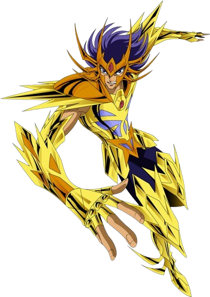Descrição
"Lutar é sua vida! Matar é sua alegria!"
Máscara da Morte de Câncer é o Cavaleiro de Ouro de Câncer e protetor da quarta Casa do Zodíaco do século XX. Adora lutas, matança e acredita que, para um objetivo maior, alguns sacrifícios são inevitáveis. As paredes da Casa de Câncer são enfeitadas com os rostos das pessoas que foram mortas até hoje por Máscara da Morte. -
Milo de Escorpião
HP 1000
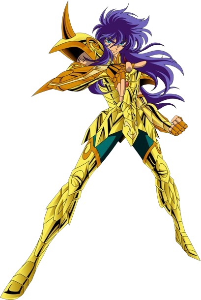Descrição
"Seus dedos não deixam escapar nenhum tipo de mal!"
Milo de Escorpião foi, no século XX, o Cavaleiro de Ouro de Escorpião que protegia a Casa de Escorpião no Santuário. Era um Cavaleiro fiel ao Santuário, inicialmente obedecendo as ordens do Grande Mestre, embora houvesse ocasiões em que ele se negaria a realizar missões específicas por questões de orgulho, sentimento este que determinava o rumo de suas conversas inicialmente, tendo se tornado consideravelmente mais humilde depois de sua batalha contra Hyoga de Cisne. -
Mu de Áries
HP 1000

Descrição
"O mistério de seus olhos é o olhar da justiça fitando a verdade."
Mu é o Cavaleiro de Ouro de Áries do século XX, que protege a Casa de Áries no Santuário. Hábil na restauração de Armaduras, é ele quem conserta as Armaduras de Bronze do Seiya e dos outros antes da Batalha das Doze Casas do Zodíaco. Como desde cedo desconfiava do Grande Mestre, deu as costas ao Santuário. Porém, desejando a purificação do local, manteve suas obrigações como Cavaleiro, dedicando-se à restauração das Armaduras em Jamiel, porém seu poder não enfraqueceu, o que pôde ser constatado durante a batalha contra os Espectros. -
Saga de Gêmeos
HP 1000

Descrição
"O traidor do Santuário entre o bem e o mal!"
Saga de Gêmeos é o irmão gêmeo mais velho de Kanon, predestinado a se tonar o Cavaleiro de Ouro de Gêmeos do século XX, que antigamente era tido como o próximo sucessor do Grande Mestre, tendo todas as características necessárias para o posto – humanidade, habilidade e força física. Dado como desaparecido há treze anos, no mangá, ele esteve escondido por todo esse tempo sob a máscara do Grande Mestre, depois de assassiná-lo e tomar seu posto como governante do Santuário. No anime, ele toma o lugar do irmão do Grande Mestre, Ares. Seu plano era matar Atena e dominar o mundo. Na verdade, Saga tinha dupla personalidade, oscilando entre extremos do bem e do mal. Dentro dele, esses opostos estavam sempre lutando entre si. Depois de ter seu coração purificado, ele mesmo tira sua própria vida. -
Shaka de Virgem
HP 1000
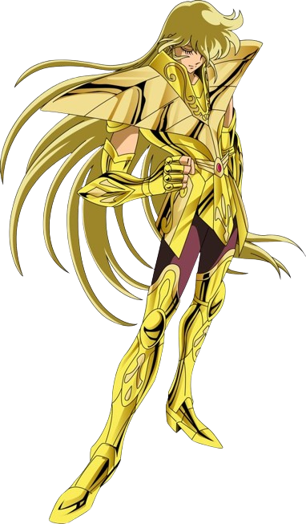Descrição
"O homem mais próximo de Deus! O mundo vazio é um convite para a morte!"
Shaka de Virgem é o Cavaleiro de Ouro de Virgem do Século XX, que protege a Casa de Virgem no Santuário. Considerado como a reencarnação de Buda, possui um poder de observação que permite conhecer a verdade escondida sob as aparências. O poder de ir e vir no tempo e espaço impressiona até outros Cavaleiros de Ouro. Tem uma morte heroica sob a destrutiva "Exclamação de Atena", criada por Saga, Shura e Camus, mas ele submeteu-se a esse golpe para poder acompanhar Atena no Mundos dos Mortos. -
Shura de Capricórnio
HP 1000
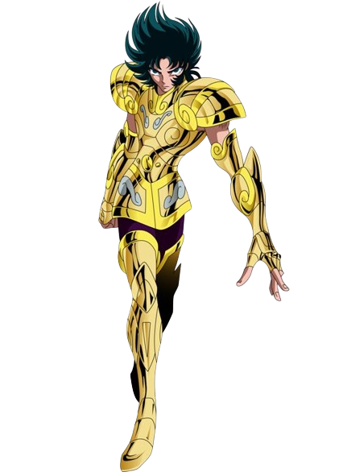Descrição
"Não há nada que a espada santa do seu braço, não possa atravessar!"
Shura de Capricórnio é o Cavaleiro de Ouro que protege a Casa de Capricórnio. Shura se considera o cavaleiro mais fiel a Atena, porém sua excessiva lealdade ao Santuário acabou levando-o a cometer uma série de equívocos. Seu golpe principal é Excalibur, no qual concentra seu cosmo numa rajada cortante de energia, como uma espada. Este golpe tem uma intensidade concentrada fortíssima, e sai na velocidade da luz.